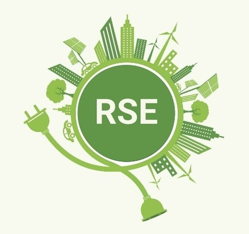

Proyectos
Gestión de Voluntariado para Eventos Sostenibles
Nuestra plataforma web conecta a organizadores de eventos, entidades y ciudadanos comprometidos para facilitar la captación, coordinación y gestión integral de voluntarios. Diseñada para minimizar el impacto medioambiental, la aplicación optimiza la limpieza de espacios públicos tanto en eventos localizados (conciertos, festivales y ferias) como en pruebas deportivas de gran recorrido.

¿Que ofrecemos en nuestra plataforma?
Para Organizadores y Entidades
Permite la publicación de eventos, la creación y distribución de zonas de trabajo o puntos de control, el control de listas de espera y la asignación inteligente de tareas según la disponibilidad y accesibilidad de los voluntarios.
Para Voluntarios
Un espacio digital intuitivo para registrarse, completar perfiles con intereses y movilidad, inscribirse en actividades, consultar historiales de participación y utilizar credenciales digitales con códigos QR para una validación rápida y segura en el puesto.
Para Administradores
Herramientas de supervisión global para revisar registros, validar perfiles, auditar asignaciones y generar informes y estadísticas detalladas que permiten evaluar el éxito y la reducción de residuos en cada actividad.
Fomentamos la participación ciudadana y la sostenibilidad digital mediante una interfaz accesible, adaptada a cualquier dispositivo y orientada a construir eventos más limpios y responsables.
Proyectos escalables a futuro
EcoEventos Corporativos y RSE : Expansión a Programas de Voluntariado de Empresas
Este proyecto evoluciona la plataforma orientada al ciudadano individual para integrar de forma nativa a empresas y corporaciones interesadas en impulsar sus políticas de Responsabilidad Social Empresarial (RSE).
Objetivo: Permitir que las organizaciones empresariales patrocinen o movilicen brigadas de empleados voluntarios para limpiar y mantener espacios públicos, ofreciendo métricas oficiales de impacto ambiental.
Nuevo Actor Corporativo: Las empresas se registran, compran o patrocinan paquetes de eventos y pueden inscribir de forma masiva a sus plantillas de trabajadores.
Cuadro de Mandos de Sostenibilidad (Dashboard RSE): Generación automática de certificados de huella de carbono neutralizada y toneladas de residuos retiradas, firmados digitalmente para que la empresa los use en sus memorias de sostenibilidad.

GreenLogistics & IoT" : Integración de Sensores de Residuos y Asignación Dinámica
Este proyecto escala la plataforma hacia un modelo tecnológico avanzado basado en el Internet de las Cosas (IoT) y la geolocalización en tiempo real para optimizar la operativa sobre el terreno durante eventos masivos.
Objetivo: Automatizar la detección de acumulación de basura en los puntos de control mediante sensores físicos para redirigir dinámicamente a los voluntarios hacia las zonas más críticas.
Contenedores Inteligentes con Sensores: Papeleras y puntos de control equipados con sensores de nivel de llenado que emiten alertas automáticas en la plataforma cuando superan el umbral establecido.
Reasignación por IA y Geofencing: Si un punto de control sufre un colapso de residuos imprevisto, el sistema calcula qué voluntarios están más cerca mediante la geolocalización de su app y reasigna tareas automáticamente.
Validación de Presencia por Proximidad: Uso del código QR del voluntario vinculado al radio de GPS del puesto para validar la asistencia de forma autónoma sin requerir supervisión manual constante.